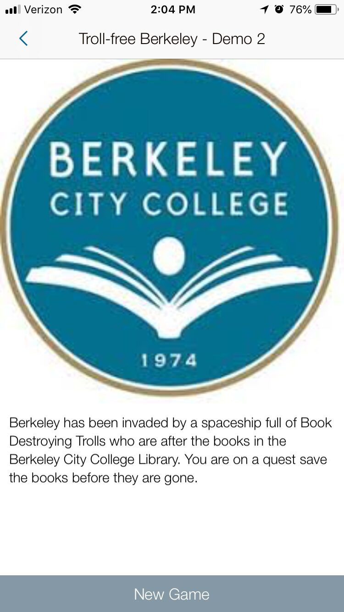
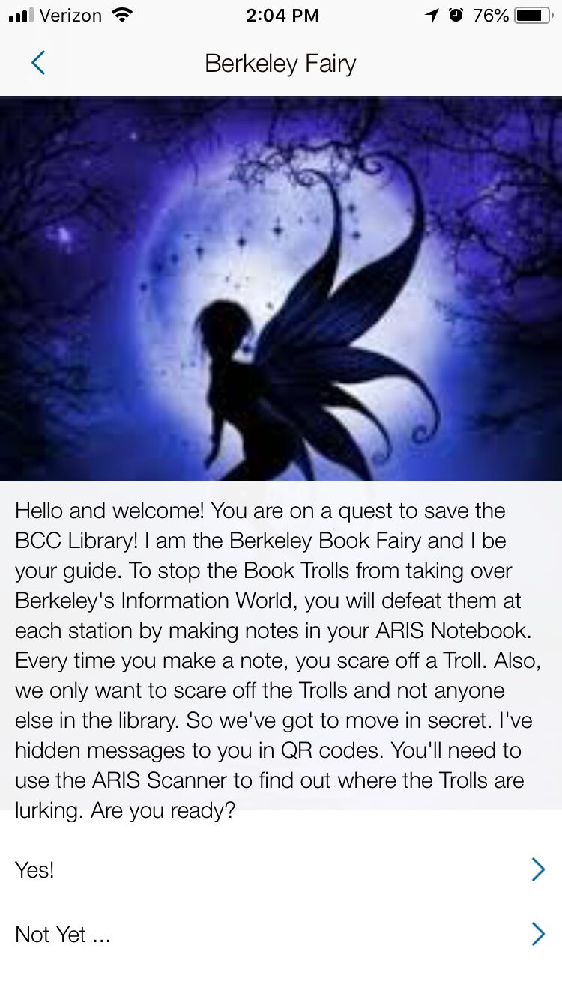

Workshop · Library Orientation
BCC Library Role-Playing Game Workshop — "Troll-free Berkeley"
Led a Flex Day workshop in Spring 2018 as an interactive library orientation. Participants installed a mobile role-playing game (built on the ARIS platform) onto their devices and played through a quest that taught students how to find books using the Library of Congress classification system and navigate the Berkeley City College campus building.
Kim, J. (2018, Spring). Troll-free Berkeley: A library orientation role-playing game [BCC Library Flex Day Workshop]. Berkeley City College Library.